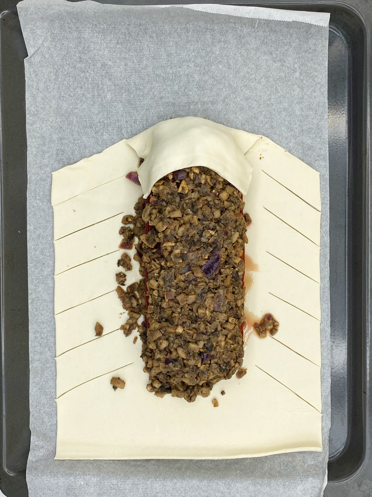

Meat-free
Wellington Loaf
HOLIDAY SPIRIT. Just before holidays, when we are perhaps more stressed with preparation, it is even more important to know how to generate and maintain a festive atmosphere at home.
December 23 2021,
Jelena Cvetković Š.
We all need joy and relaxation for the system to balance out. The holidays are a great reminder for us to pull the break, calm down and enjoy the time with ourselves and family. To make holidays even more beautiful this year, we have prepared a recipe, which will surely make you and your family happy and therefore create a pleasant atmosphere. The aromatic taste of the vegan roast, which is coated with mushroom filling and wrapped in dough, will definitely enchant guests and restore our serenity, optimism and hope.
Meat-free Wellington Loaf
Meat-free Wellington loaf will definitely attract special attention on your table full of other delicious meals. The soft and juicy core topped with mushrooms and wrapped in a crispy puff pastry is certainly the right choice for festive pampering of the palate. One more thing: it's not at all as demanding as it seems ;)
 Preparation: 30 min
Preparation: 30 min
 Cooking: 90 min
Cooking: 90 min
 Difficulty: medium
Difficulty: medium
 Servings: 8
Servings: 8
vegan, dairy free, low fat

Ingredients:
Roast:
- 2 tablespoons oil
- ½ onions
- 3 cloves of garlic
- 2 teaspoons thyme
- 2 teaspoons ground rosemary
- 1 teaspoon ground cumin
- 80 g sunflower seeds
- 170 g cooked red beets (1 medium sized)
- 200 g smoked tofu
- 1 teaspoon ground smoked peppers
- 1 tablespoon balsamic vinegar
- 2 tablespoons corn starch
- Salt and pepper to taste
Mushroom Duxelles:
- 500 g mushrooms
- 2 shallots (medium)
- 2 cloves of garlic
- 2 tablespoons oil
- 1 teaspoon thyme
- Salt and pepper to taste
To assemble:
- 1 pack of puff pastry
- 2 tablespoons oil
- black sesame seeds for decoration
Preparation:
Roast:
- Heat the oil in a frying pan, chop the onion and garlic and fry them. Remove from the heat and transfer to a blender bowl.
- Add the other roasting ingredients to the mixer bowl and mix until fine. Add salt and pepper to taste.
- Preheat the oven to 180 ° C, line the tray with baking paper.
- Place the base for the roast on plastic wrap (for easier shaping) and make a cylindrical shape, about 15 centimetres long. Transfer to baking paper and transfer to the oven and bake for 30 minutes at 180 ° C.
Mushroom Duxelles:
- Clean the champignons and chop finely.
- Finely chop the shallots and garlic.
- Heat the oil in a frying pan, lightly fry the shallots and garlic, then add the champignons.
- Season everything with thyme, add salt and pepper to taste and fry until the champignons release the water and it evaporates.
- Allow the mass to cool completely, you can also transfer it to the refrigerator.
To assemble:
- Spread a layer of puff pastry and place a layer of roast-sized mushrooms in the middle.
- Place the roast on a layer of mushrooms, then coat the whole with mushrooms. Press the mass so that it sticks to the roast.
- Preheat the oven to 200 ° C.
- Now cut the dough into strips about 2 cm wide along the sides of the roast. We cut them diagonally so that we can easily intertwine them.
- Fold the front and back of the dough over the roast and intertwine the side strips so that there are thinner gaps between them, through which moisture can escape during baking.

- The rest of the dough can be used for decoration or just baking.
- Finally, coat the dough with oil, sprinkle it with sesame seeds and place in the oven.
- Bake for 25 minutes at 200 ° C until the dough is golden brown.
- Cool the roast and serve with baked potatoes or a vegetable side dish.
Meat-free Wellington loaf is very well compatible with baked potatoes as a vegetable side dish. You can also serve some sauce, although the dish is already juicy in itself.

Photo credits:
Jelena C. Š.